|
2001年10月14日
|
【速報】
"東京ゲームショウ2001秋"閉幕 |
●"東京ゲームショウ2001秋"、いよいよ最終日
10月12日から開幕した"東京ゲームショウ2001秋"も今日でいよいよ最終日。今日は日曜日とあって家族連れで参加されていた方も多く、とても賑やかな1日となりました。
| 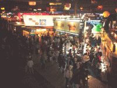 |
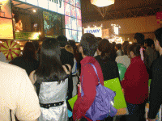 |
| ▲会場の雰囲気。 |
▲各ブースで行われたイベントには人がたくさん集まっていました。 |
●趣向を凝らした各コーナー
子供向けに設営されたキッズコーナーでは、子供たち向けのゲーム展示やイベントが行なわれ、お子様の手を引いて参加するお父さんやお母さんの姿も多く見られました。
| 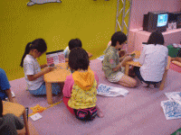 |
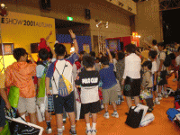 |
| ▲みんなで座って携帯ゲームをプレイ。 |
▲イベントのじゃんけん大会でも元気よく手が上げられていました。 |
ゲームスクールコーナーでは、各ゲームスクールが独自のブースを展示。在校生の作品を実際にプレイしてもらっていたところもあり、将来ゲーム業界へ入ろうとしている人たちは熱心に各ブースを回っていました。
| 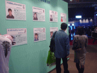 |
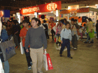 |
| ▲ここを訪れた人たちの中から、未来のスタークリエイターが出現するかも！ |
▲物販コーナーも大盛況。 |
今回の"東京ゲームショウ"では、展示ホール2のメインエントランス横に、来場者の皆様に気軽にインターネットを楽しんでいただける"ブロードバンドカフェ"を設置し、通常のインターネットが楽しめるだけではなくオンラインゲームが体験できるスペースを用意。椅子に座ってゆったりとパソコンに向かっている人の姿が多く目に留まりました。
| 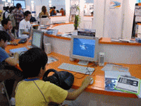 |
| ▲ゆっくり座ってブロードバンドを楽しむ人々。 |
●最終日のステージイベントは……
最終日の今日も、イベントステージで数多くのイベントが開催されました。第1弾は11時30分から行われた、MagicFM・FMやまとのラジオ番組『ANIME
MAGIC』の公開録音"ANIME MAGIC秋の遠足スペシャル"。ナビゲーターに熊谷隆子さん、ゲストに歌手の影山ヒロノブさんを迎え、さらに後半部分ではアニメージュ編集長松下俊也さんも登場し、いま注目されるアニメの話などで大盛り上がっていました。
| 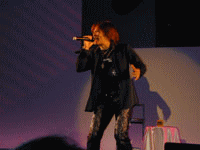 |
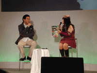 |
| ▲影山ヒロノブさんはアニメの主題歌などを熱唱。 |
▲後半は、松下俊也さん（左）を交えてのトークショーとなりました。 |
14時からは、期待の新人アーティストたちによるライブ＆トークショー"GO！GO！プロモーション！〜アーティストライブ〜"が行われました。それぞれの持ち歌を熱唱。初々しいライブで観客もほんわかした雰囲気になっていました。
| 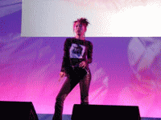 |
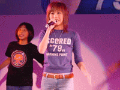 |
| ▲元レースクィーンの朝丘紗智さん。 |
▲宮川美香さんは『くるくるアミー』の主題歌を歌いました。 |
そして15時45分からは、各出展社のコンパニオンコスチュームの人気投票の結果を発表する恒例イベント、"輝け！ ベストコスチュームinTOKYO
GAME SHOW 2001 AUTUMUN"が開催。グランプリは、胸元にXboxのロゴが入った白と黒のツートンカラーのコスチュームと、Xbox本体そのものをイメージして作られた2つのコスチュームで来場者を魅了したマイクロソフトが受賞。準グランプリにはアトラス、NTTドコモの2社が選ばれました。
|
| ▲右がグランプリを獲得したマイクロソフト、そして左が準グランプリのアトラス。 |
ステージイベントの最後を締めくくったのは、"チャリティーオークション＆大抽選会"。12社から集められた33のレアアイテムがオークションにかけられ、つぎつぎと競り落とされていきました。ちなみに今回は、小中学生を対象にしたキッズオークションも用意されており、小さなお子様たちも欲しいグッズを手に入れようと一生懸命手を上げていました。
| 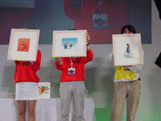 |
| ▲チャリティーオークションでは、各社お蔵だしのレアアイテムがオークションにかけられました。 |
●そして閉幕
そして10月14日午後5時、"東京ゲームショウ2001秋"は3日間の会期を終えました。本日の来場者数は49,592人、会期中3日間の合計人数は12万9,626人となりました。
今回の"東京ゲームショウ2001秋"のテーマは"Let's
Play Together！"。来場されたかたは、それぞれ思い思いにゲームをプレイし、イベントに参加し、何よりこのゲームショウというイベント自体を楽しんでらっしゃったのではないかと思います。ネットワーク時代が到来し、これまでのようにひとりで遊ぶのではなく、みんなでいっしょに楽しむものとして、ゲーム文化は今後も発展していくことでしょう。
次回、東京ゲームショウは2002年9月の開催を予定しています。その時にまた皆様にお会いできることを心からお待ちしております。
|
|